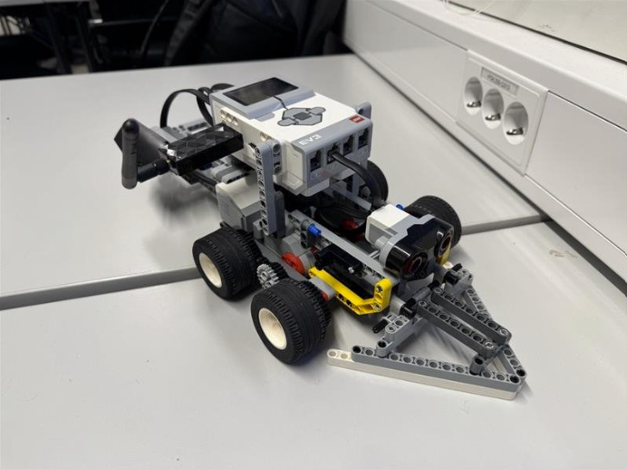

LEGO prosjekt | IDAT1004
Vi har fått som oppgave å implementere og presenterer en teknologisk løsning, med spesielt stor vekt på bærekraft og samhandling som team.

Prosjekt
Vi valgte å bygge og implementere en Semiautonom elektrisk brøytebil som kunne styres fra et web-dashboard, samt sende data til web-dashboardet. Vi hadde som hensikt å utvikle produktet slik at det gjenspeiler noe tilsvarende som ville blitt utviklet i virkeligheten. Dermed har vi fokusert på å tilrettelegge for videre utvikling, og tatt hensyn til positive og negative aspekter når det gjelder bærekraft.
- ✓ Brøytebilen er robust konstruert og fungerer mekanisk
- ✓ Brøytebilen kan startes og stoppes via web-tjeneste
- ✓ Stabil kommunikasjon mellom EV3 og web-tjenesten
- ✓ Godt dokumentert utviklingsprosess
- ✓ Styrke kompetanse innen programmering, GitHub, prosjektstyring og samhandling
- ✓ Levere et produkt med høy faglig kvalitet som referanse
- ✓ Utvikle effektiv arbeidsmetodikk for fremtidige prosjekter
- ✓ Sikre mestring, faglig utvikling og positiv samarbeidsopplevelse
Refleksjon om læringsutbytte
Gjennom prosjektet har jeg fått en bedre forståelse av hvordan et distribuert system fungerer i praksis. Teamet besto av kompetente medlemmer som gjorde at vi kunne utvikle et solid produkt. Her fikk jeg lært mye om samspill mellom klient (roboten) og server, ettersom vi hadde team-medlemmer med kompetanse og erfaring i dette området fra før av.
Jeg har også lært hvor viktig tydelig arbeidsfordeling, jevnlig kommunikasjon og fysiske møter er for et godt prosjektresultat. Vi ble enige om å dele opp arbeidsoppgavene og sørge for god kommunikasjon, men likevel kunne hjelpe hverandre på tvers av de opprinnelige arbeidsinndelingene. Så langt det lot seg gjøre ville vi også oppdatere hverandre med det vi har gjort for hver uke, og hadde derfor et møte i slutten av hver uke. Her orienterte vi hverandre om det vi hadde gjort og planla det vi ville gjøre, som var svært nyttig. Dette gjorde oss i grunnen til et bedre team som helhet, og gjorde arbeidet mer effektivt og av høyere kvalitet.
Mitt bidrag i gruppearbeidet
I prosjektet bidro jeg med arbeid relatert til utvikling, testing og dokumentasjon. Vi hadde basert teamet vårt på en klassisk frontend og backend struktur, som i hovedsak dreier seg om å dele opp utviklingen i to deler. Frontend delen hadde hovedansvar for roboten og dens funksjonalitet, mens backend delen jobbet med serveren og databehandlingen på web-tjenesten. Jeg jobbet hovedsaklig på frontend delen av produktet, og utviklet dermed konstruksjonen og funksjonaliteten til roboten. Her fikk jeg brukt programmeringsegenskapene mine til å utvikle en fungerende kode, samtidig som konstruksjonen skulle være robust.
Hvordan jeg kan bruke dette i en jobb kontekst
Prosjektet har gitt praktisk erfaring med både programmering, distribuerte systemer og prosjektarbeid. Arbeid som utvikling og programmering opptrer i stor grad som teamarbeid i dagens næringsliv. Det er derfor svært attraktivt å kunne jobbe godt i team, finne svakheter og styrker i teamet og greie å utnytte alle ressursene som er tilgjengelige. Derfor føler jeg at dette prosjektet i sin helhet har gjort meg mer rystet for å jobbe i team. Vi har tatt i bruk en smidig arbeidsprosess i form av en iterativ prosess med fokus på hyppig feedback.